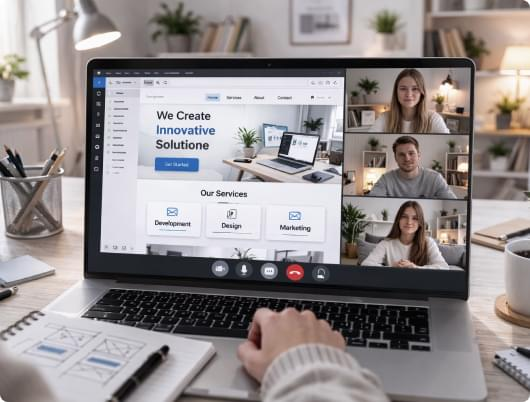

Як бізнесу обрати формат сайту: лендинг, корпоративний сайт чи веб-сервіс
Багато бізнесів починають із сайту «для галочки» — і лише з часом розуміють, що формат платформи напряму впливає на заявки, продажі та довіру клієнтів. У цій статті ми покажемо, чим відрізняються лендинг, корпоративний сайт і веб-сервіс — та як обрати правильний варіант під вашу задачу.
Читати далі